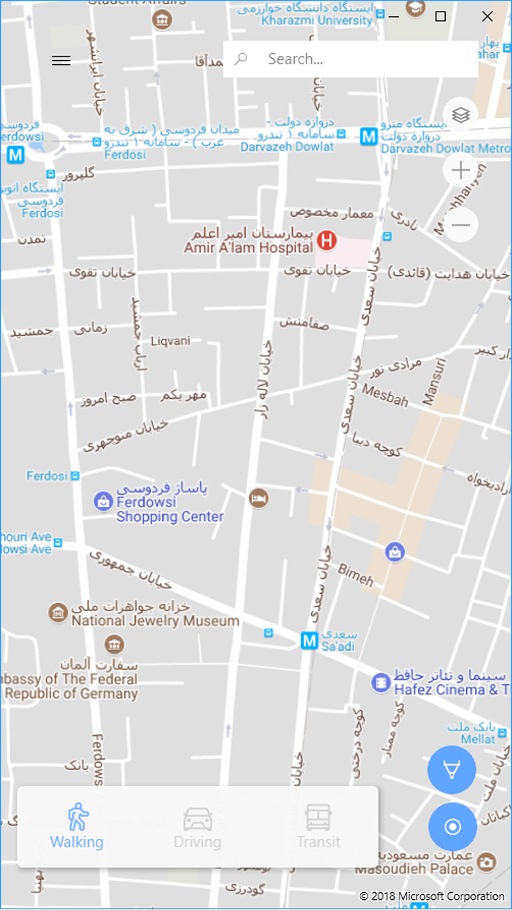
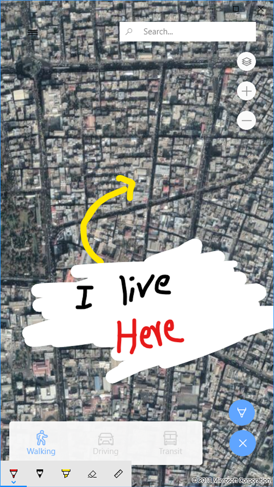
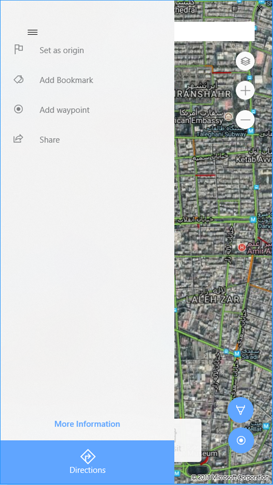
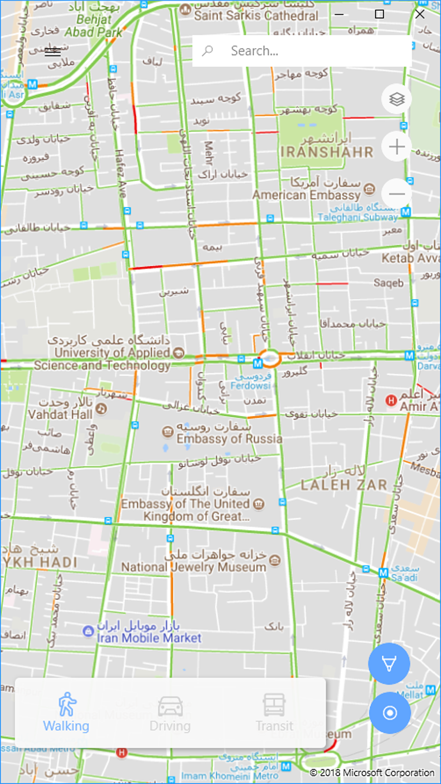

WinGo Maps
UNOFFICIAL Google Map client for Universal Windows Platform.
Now available in windows store!
-
Full google maps experience; Now on windows 10!
WinGo Maps offers best experience of google maps in windows 10. You can do pretty mich everything in this app.
 -
Inking!
You can draw and doondle in maps! Yes!
 -
Places, Bookmarks and more
You can bookmark places in WinGo Maps; Also places are supported as well.
 -
Direction and navigation
WinGo Maps offers vice navigation, traffic view and many more cool features to help you to have best experience of navigation.
